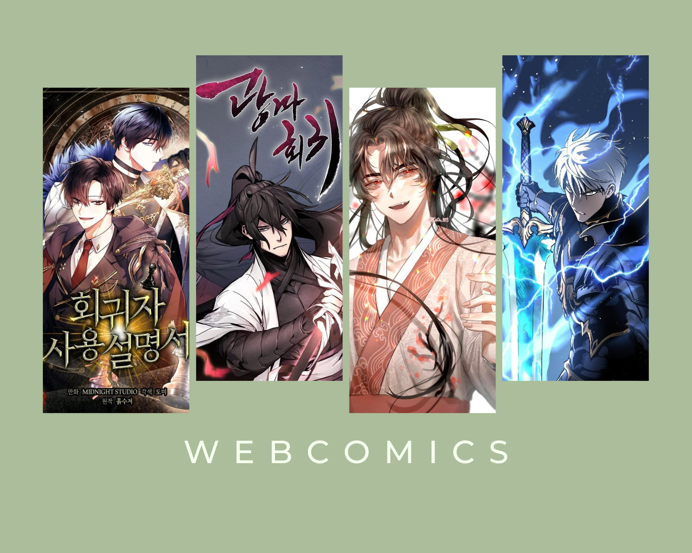

Ive played soccer for a very long time, including this year. I got to play on the JV tean for the first time this year and I also joined a new soccer club called Mavericks. However, the soccer club is merging with another club, so our new club name is EAFC.Playing soccer is what keeps me fit, however I keep getting injuries because of it.
These are a FEW (only a small amount) of my favorite webcomics that I have read this year. They are still ongoing and they are so much fun to read. I love reading webcomcis and it is mainly what I do when Im bored at home! I get really excited whenever I get to talk about webcomics with someone else.